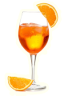

Tiny bubbles in the wine. Make me feel happy, make me feel fine.- Don Ho, Tiny Bubbles
The cocktail style Spritz dates back to the 1800s where it was made with white wine and soda. Aperol was created in 1919 in Padua, northern Italy. In the 1950s the Aperol Spritz was born. 3-2-1 ratio Prosecco, Aperol, Soda. Likely to have a hand in the sparkling influence for a Spritz.
The drink became popular worldwide with alcohol distribution increases. Modern twists see strawberries, mint, cucumber, lime and other fruits presented in and around the glass.